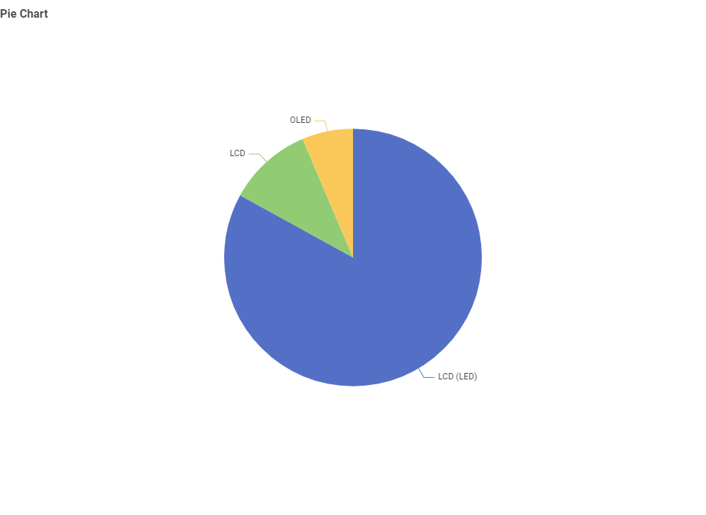
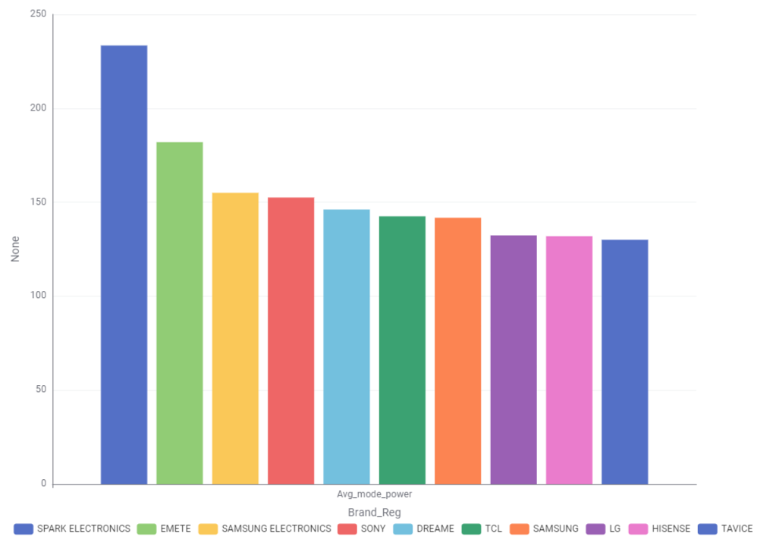
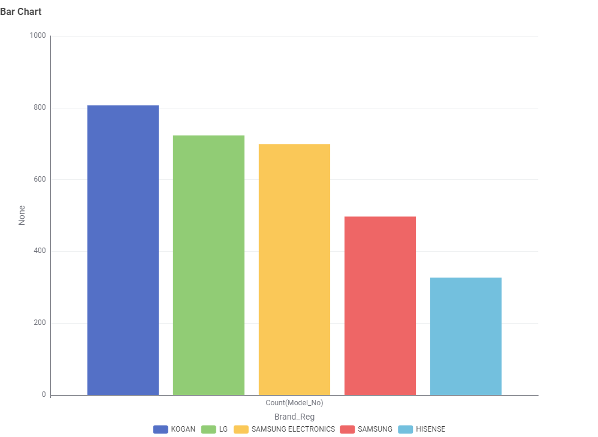
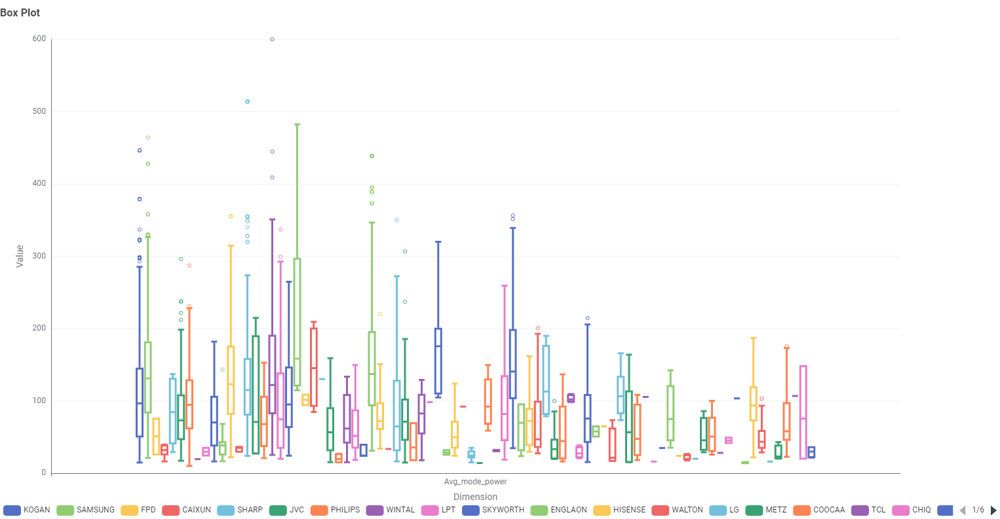
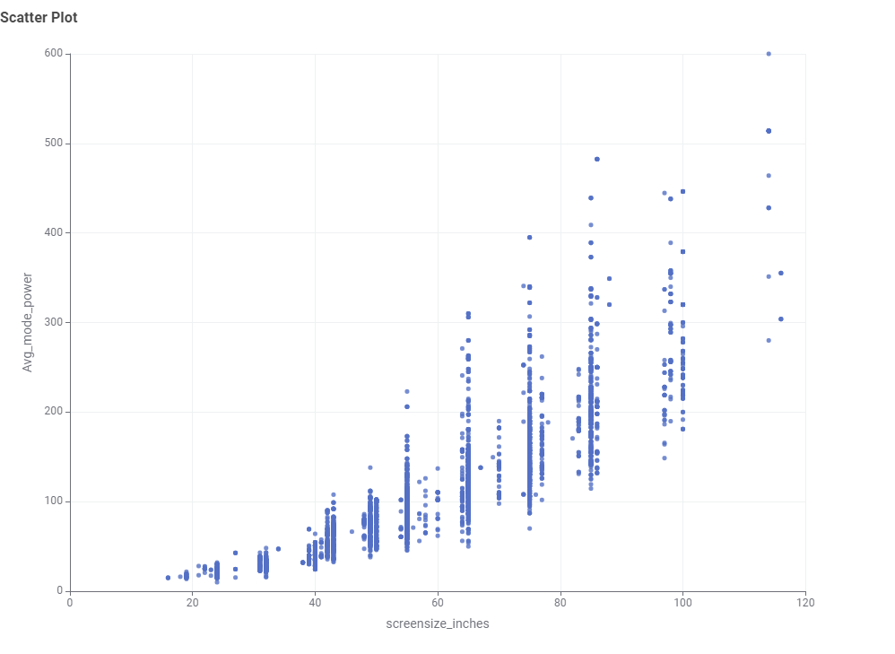
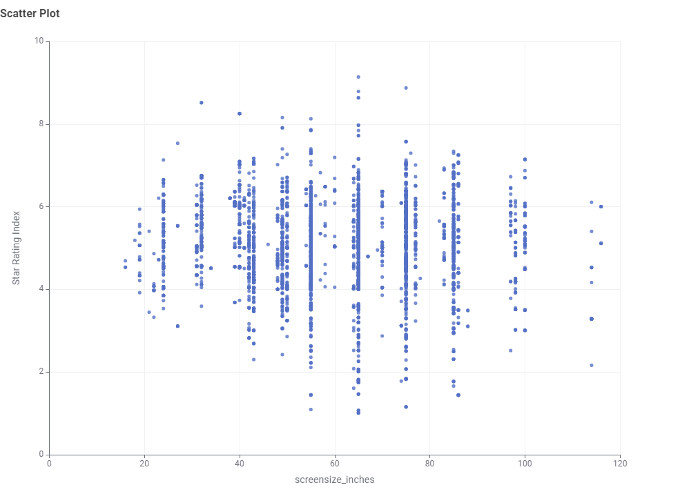

Television Energy Consumption Data
This section presents findings from the Australian Government's Television Energy Rating dataset. The aim is to help Australian consumers make informed decisions about technology, size, brand, and efficiency.
Chart 1: What TV screen technologies are most common?
Pie Chart

Insight: LCD (LED) technology dominates the Australian market at 84.53%, while OLED remains a premium niche at 6.84%. This suggests LCD (LED) is currently the mainstream choice for most households.
Chart 2: What screen sizes are most frequent?
Bar Chart

Insight: The most popular screen size is 65 inches (approximately 773 models), followed closely by 55-inch models. Small screens (under 32 inches) are much less common, indicating a clear consumer shift toward larger TVs in recent years.
Chart 3: Which brands dominate the market?
Bar Chart

Insight: Kogan, LG, and Samsung Electronics have the largest number of TV models available in Australia. This reflects the strong presence of both budget and premium brands competing across all price segments.
Chart 4: Which screen technology consumes the least power?
Bar Chart

Insight: LCD TVs have the lowest median power consumption (~70W), while OLED uses the most (~113W). LCD (LED) sits in between (~107W). This shows that traditional LCD panels are still the most energy-efficient option.
Chart 5: What is the relationship between screen size and power use?
Scatter Plot

Insight: There is a clear positive correlation between screen size and power consumption. Larger TVs consistently use more power, though the spread widens significantly beyond 80 inches — meaning some large TVs are much more efficient than others.
Chart 6: What is the relationship between star rating and screen size?
Scatter Plot

Insight: Star ratings are fairly distributed across all screen sizes. Larger TVs can still achieve high star ratings (5+ stars) if well-designed, so consumers don't have to sacrifice efficiency for size.
Conclusion
When choosing a TV, balance size, brand, and efficiency. A 65-inch LED TV is currently the most common choice in Australia, offering a good balance between size and energy consumption. Larger OLED screens provide superior picture quality, but at a higher energy cost.